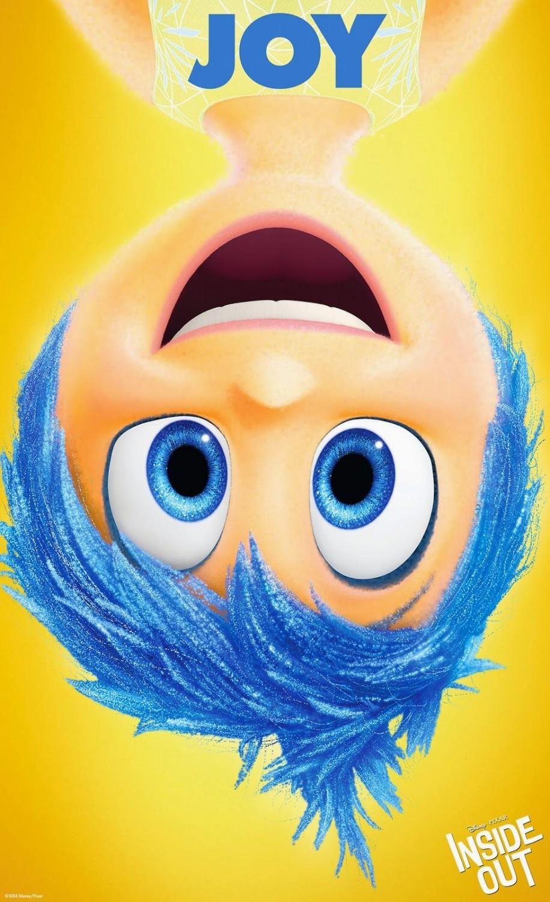
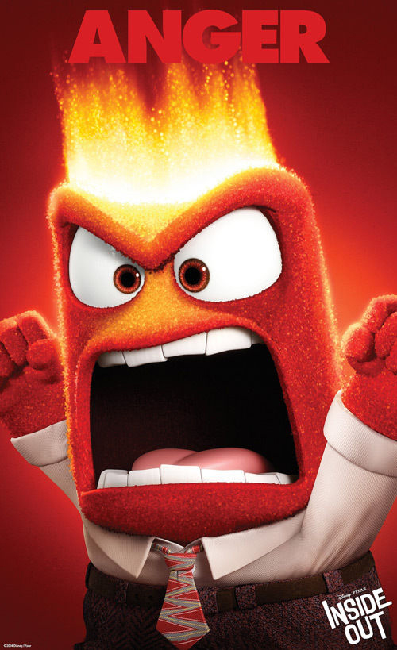
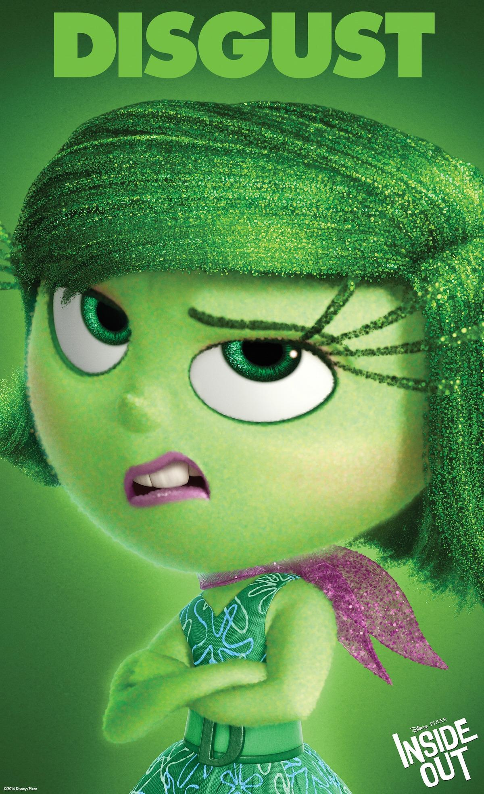
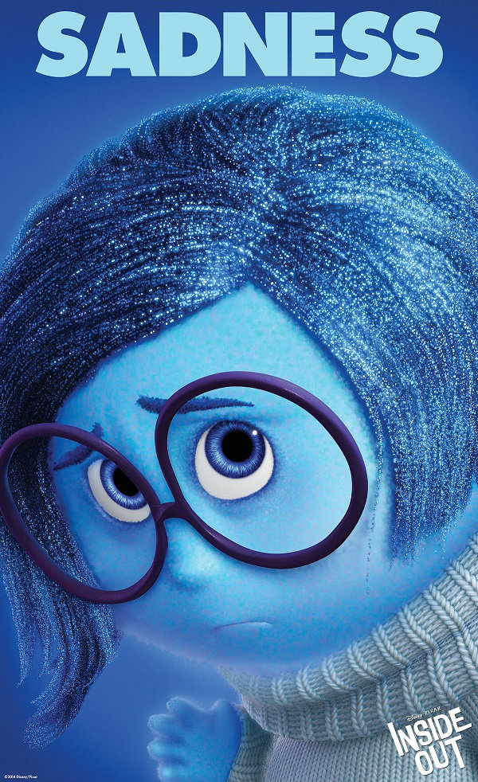

มหัศจรรย์อารมณ์อลเวง (อังกฤษ: Inside Out) เป็นภาพยนตร์แอนิเมชันสามมิติแนวดราม่าตลกจากประเทศสหรัฐอเมริกา ผลิตโดยพิกซาร์แอนิเมชันสตูดิโอและจัดจำหน่ายโดยวอลท์ดิสนีย์พิคเจอร์ส กำกับโดย พีต ดอกเตอร์ โดยมี รอนนี่ เดล คาร์เมน ร่วมกำกับ เขียนบทโดยความร่วมมือระหว่าง ดอกเตอร์ เม็ก เลอโฟฟ, และ จอช คูลีย์ ดัดแปลงจากเรื่องต้นฉบับโดย ดอกเตอร์ และ เดล คาร์เมน ดำเนินเรื่องในจิตใจของเด็กหญิงคนหนึ่งชื่อไรลีย์ แอนเดอร์เซน (เคทลิน ดิแอส) ซึ่งอารมณ์ทั้งห้า ได้แก่ ลั้ลลา (เอมี่ โพห์เลอร์), เศร้าซึม (ฟิลลิส สมิธ), หยะแหยง (มินดี้ คาลิง), ฉุนเฉียว (ลูอิส แบล็ค), และ กลั๊วกลัว (บิล เฮเดอร์) พยายามช่วยกันพาเธอผ่านปัญหาชีวิต เนื่องจากพ่อแม่ของเธอ (ไดแอน เลน และ ไคล์ แมคลัคแลน) ต้องย้ายบ้านจากมินเนสโซตาไปซานฟรานซิสโก
และตัวเธอต้องปรับตัวเข้ากับสิ่งแวดล้อมใหม่ๆ



